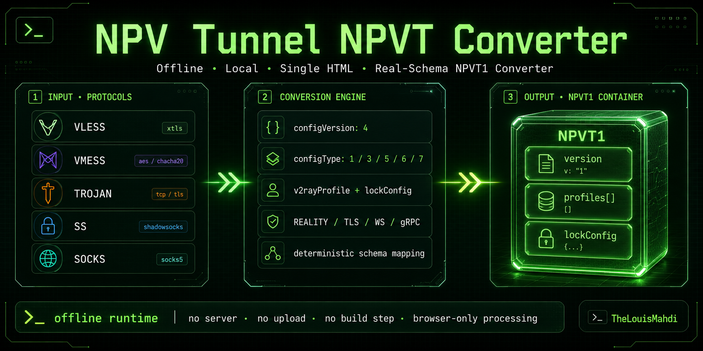

NPV Tunnel NPVT Converter
Offline browser-based converter for building real-schema NPVT1 files from V2Ray links and extracting V2Ray profiles from existing NPV Tunnel containers. Supports VLESS, VMess, Trojan, Shadowsocks, SOCKS, TLS, REALITY, WebSocket, and gRPC profile mapping.
NPVT1VLESSVMessTrojanShadowsocksSOCKSREALITYOffline